第三章形式语言与自动机及其在NLP中的应用
基本概念：
- 语言：按照一定规律构成的句子和符号串的有限或无限的集合。 - N. Chomsky
- 语言描述三种途径：
- 穷举法 — 只适合句子数目有限的语言。
- 语法描述 — 生成语言中合格的句子。
- 自动机 — 对输入的句子进行检验,区别哪些是 语言中的句子,哪些不是语言中的句子。
- 形式语言的直观意义：形式语言是用来精确地描述语言(包括人工语言和 自然语言)及其结构的手段。形式语言学 也称 代数语 言学。 以重写规则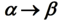 的形式表示,其中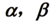均为字符串。顾名思义：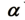可以被改写成 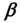。一个初步的 字符串通过不断地运用重写规则,就可以得到另一个字符 串。通过选择不同的规则并以不同的顺序来运用这些规则, 就可以得到不同的新字符串。
- 形式语法的定义：
- 最左推导、最右推导（规范推导）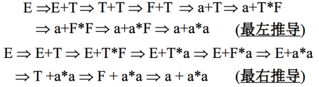
- 正则文法：又称3型文法（左线性正则文法：A ->Bx）否则A->xB 为右线性正则文法
- 上下文无关文法 (context-free grammar, CFG)：又称为2型文法 : A - > a
- 上下文有关文法(context-sensitive grammar, CSG)：又称为1型文法
- 无约束文法(无限制重写系统)：如果 P 中的规则满足如下形式: 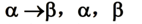是字符串,则称 G 为无约束文法,或称 0 型文法。
- 显然,每一个正则文法都是上下文无关文法,每一个上下无关文法都是上下文有关文法,而每一个上下文有关文法都是0型文法,即:
- 语言与文法类型的约定：如果一种语言能由几种文法所产生,则把这种语言称为在这几种文法中受限制最多的那种文法所产生的语言。
- CFG 产生的语言句子的派生树表示：
- 对于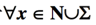给一个标记作为节点, S 作为树的根节点。
- 如果一个节点的标记为 A,并且它至少有一个除它自身以外的后裔,则 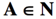
- 如果一个节点的标记为 A,它的 k ( k > 0) 个直接后裔节 点按从左到右的次序依次标记为 A1, A2, ..., Ak,则 A A1A2...Ak 一定是 P 中的一个产生式。
- 例如：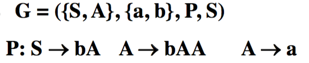
- 上下文无关文法的二义性：一个文法 G,如果存在某个句子有不只一棵分析树与之对应,那么称这个文法是二义的。
- 例如：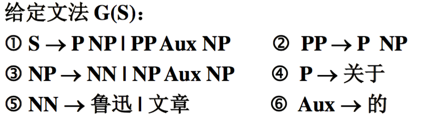
- 则“关于鲁迅的文章“的推导：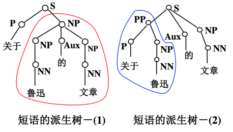
- 有限 自动机 (finite automata, FA)：由于 DFA 与 NFA 所接受的是同样的链集, 所以一般情况下无需区分它们,二者统称为有限 自动机 (finite automata, FA)
- 确定的有限自动机(definite automata, DFA)
- 不确定的有限自动机 (non-definite automata, NFA)
- NFA 与 DFA 的区别： NFA 与 DFA 的唯一区别是:在 NFA 中 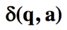是 一个状态集合,而在 DFA 中 是一个状态。
- NFA 与 DFA 的关系：设 L 是一个被 NFA 所接受的句子的集 合,则存在一个 DFA,它能够接受 L
- 下推自动机 (push-down automata, PDA)
文法与自动机的关系
正则文法与有限自动机的关系
- 若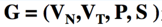是一个正则文法, 则存在一个有限自动机 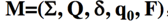,使得: T(M) = L(G)。
- 由G构造M的一般步骤：
- 例题：给定正则文法 G =(V n, Vt , P, S ),其中, VN={S, B}, VT={a, b}, P={S ->aB, B-> bS|aB|a} 构造与 G 等价的 NFA。
- 若是一个有限自动机, 则存在正则文法 ,使得: L(G) =T(M)。
下推自动机与CFG
- 映射关系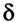的解释：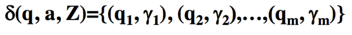，其中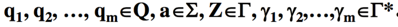
- 该映射的意思是:当PDA处于状态 q,面临输入符号 a时,自动机将进入qi, i = 1, 2, ..., m状态,并以 i 来 代替下推存储器(栈)顶端符号Z,同时将输入头指向下 一个字符 。
- 当 Z 被 i 取代时, i 的符号按照从左到右 的顺序依次从下向上推入到存储器。
- 特殊情况下,当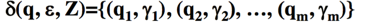时,输入头位置不移动,只用于处理下推存储器内部 的操作,叫作 “ 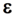移动”
- 例题：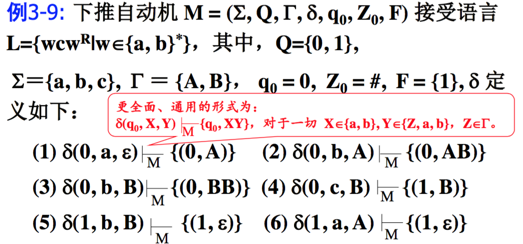
- 图灵机和线性带限自动机
- 图灵机与有限自动机的区别:图灵机可以通 过其读/写头改变输入带的字符。
- 线性带限自动机是一个确定的单带图灵机, 其读写头不能超越原输入带上字符串的初始 和终止位置,即线性带限自动机的存储空间 被输入符号串的长度所限制。
- 各类自动机的区别
- 各类自动机的主要区别是它们能够使用的 信息存储空间的差异:
- 有限状态自动机只能用 状态来存储信息;
- 下推自动机除了可以用状态 以外,还可以用下推存储器(栈);
- 线性带限自 动机可以利用状态和输入/输出带本身。因为 输入/输出带没有“先进后出”的限制,因此, 其功能大于栈;
- 而图灵机的存储空间没有任何 限制。
- 语言与识别器的对应关系：识别器是有穷地表示无穷语言的另一种方 法。每一个语言的句子都能被一定的识别器 所接受。
应用举例：
有限自动机在 NLP中的应用
英语单词拼写检查[Oflazer, 1996]
- 设 X 为拼写错误的字符串,其长度为m, Y 为 X 对应的正确的单词(答案),其长度为 n。则 X 和 Y 的编辑距离 ed(X[m], Y[n]) 定义为:从字符串 X 转换到 Y 需要的插入、删除、替换和交换两个相 邻的基本单位(字符)的最小个数。如:
- ed (recoginze, recognize) = 1 ed (sailn, failing) = 3
- 假设Z = z1 z2 ... zp 为字母表A上的p个字母构成 的字符串,Z[j] 表示含有j (j 1) 个字符的子串。X[m] 为拼写错误的字符串,其长度为m,Y[n] 为与X串接 近的字符串(一个候选),其长度为n。则给定两个串X 和Y的编辑距离ed(X[m], Y[n]) 可以通过循环计算出从 字符串X 转换到Y 需要进行插入、删除、替换和交换 两个相邻的字符操作的最少次数
- 如果 xi+1= yj+1(两个串的最后一个字母相同), 则 ed(X[i+1], Y[j+1]) = ed(X[i], Y[j]);
- 如果 xi = yj+1,并且 xi+1 = yj(最后两个字符需要 交换位置),则 ed(X[i+1], Y[j+1]) = 1+min{ed(X[i-1], Y[j-1]), ed(X[i], Y[j+1]), ed(X[i+1], Y[j])}
- 其它情况下(xi+1 != yj+1且 (xi!= yj+1或 xi+1!= yj)) ed(X[i+1],Y[j+1])= 1+min{ed(X[i],Y[j]), ed(X[i],Y[j+1]), ed(X[i+1],Y[j])}
- 其中, ed(X[0],Y[j]) j (0 <=j<= n) (X长度为0)
- ed(X[i],Y[0]) i (0<= i<= m) (Y长度为0)
- ed(X[ -1],Y[ j]) =ed(X[i],Y[ -1]) =max{m,n} (边界约定)
- 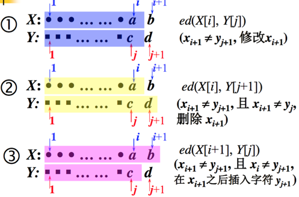
- 如果 L A* 表示有限状态机 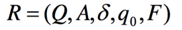（其中Q 表示状态集;A 表示输入字符集；q0为起始状态，F为终止状态集）接受的语言,字母 构成的所有合法单词都是有限状态机中的一条路径。 给定一个输入串,对其进行检查的过程就是在给定阈 值 t (t > 0) 的情况下,寻找那些与输入串的编辑距离 小于 t 的路径。那么,一个字符串 X [m] L 能够被 R 识别的条件是存在非空集合: C {Y[n]|Y[n] 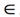L and ed(X[m],Y[n]) <= t}
- 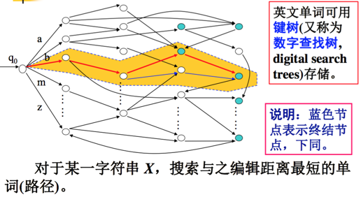
- 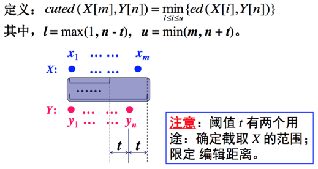
- 例子：
- 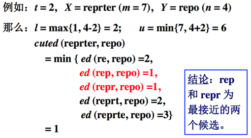
- 采用深度优先搜索算法从自动机中选择路径。假设 X=bax, t=2。那么,Y=a/b/c/.../z,l=max{1, 1-2}=1, u=min{3, 1+2}=3。即从 X 中取长度在1~3个字符范围内 的子串X’={b, ba, bax},分别计算与 Y 之间的编辑距离, 保留那些 ed(X’, Y)≤ t 的路径,选择 ed 最小的路径继续 扩展。 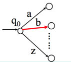
- X=bax, t=2。 Y={ba, bi, bo, ... ...}。 截取 X: l=max{1, 2-2}=1, u=min{3, 2+2}=3。 X’={b, ba, bax} 保留那些 ed(X’, Y)≤ t 的路径,选择 ed 最小的路径继 续扩展。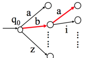
- X=bax, t=2。Y={baa, bad, bag, bat, bay}。 截取 X: l=max{1, 3-2}=1, u=min{3, 3+2}=3。 X’={b, ba, bax} 保留那些 ed(X’, Y)≤ t 的路径,选择 ed 最小的路径, 继续扩展Y。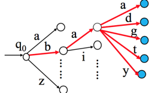
- X=bax, t=2。Y={bade}。 截取 X: l=max{1, 4-2}=2, u=min{3, 4+2}=3。 X’={ba, bax} 保留那些 ed(X’, Y)≤ t 的路径,选择 ed 最小的路径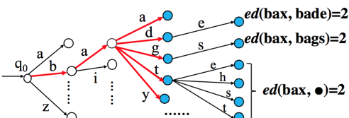
- 算法：
- 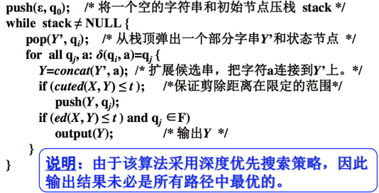
有限自动机用于英语单词形态分析 [Allen, 1995]
英语单词形态变化非常普遍,例如: eat: eats, eating, ate, eaten happy: happier, happiest seed ?
- 在实际应用中,除了有限状态机以外, 还常常使用有限状态转换机(finite state transducer, FST)的概念。粗略地讲,有限状 态转换机与有限自动机(或有限状态机)的区别 在于:FST 在完成状态转移的同时产生一个输 出,而 FA (或 FSM) 只实现状态转移,不产生 任何输出。
- 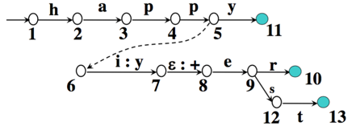
- 识别单词:happy, happier, happiest 可转换的形式: happier happy + er happiest happy + est
- 一般地,具有相同的前缀或词根,词缀不 同的单词可以共用一个有限状态转移机,共享 其中的某些状态节点。如:tie, ties, trap, traps, try, tries, to, torch, torches, toss, tosses 等
- 除了单词拼写检查、形态分析以外,有限 状态自动机还广泛应用于词性标注、句法分析、 短语识别、机器翻译和语音识别等很多方面